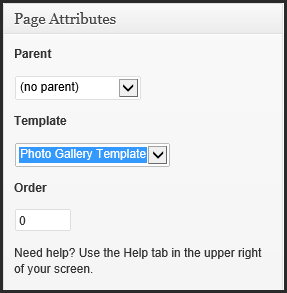

Copyright
The contents of this User Manual are subject to the Dive Catalina Website. This documentation is created by Spring 2012 CSULB Senior Project Team GREP. Users All Rights Reserved. All trademarks within this guide belong to Ron Moore.
Getting Started: Admin Panel
User can use administration interface to modify content and set up stucture of the website.
Logging In
- In order to access the administration interface, user must log in first. User can access the log in screen, as shown in Figure 1, by using the address www.divecatalina.net/wp-admin. Then, user will be asked to enter the username and password.
- User must log off when done using the admin panel. It will stay logged in until user logs out.

- Figure 1. Log in screen
The Dashboard
- Once the user is logged in, Dashboard page appears as shown in Figure 2. This is the main administration homepage. At every top of the pages, name of the site is located in the header area which is also hyperlinked to site's homepage. On upper right corner, user can locate the name of the person who is currently logged in. User can find edit profile and log out link by putting a cursor on the name of the person [Figure 3].

- Figure 2. Main Admin Page
- Figure 3. Hovering over the name displays options to edit profile or log out.
Menu Options
- Along the left side of the Dashboard, user can locate main admin navigation menu as shown in Figure 4. Menu contains main options user can use to edit and confgiure the website.
| Figure 4. Media Fly Out | Menu has been adjusted to show only the options that are applicable to the user. Menu includes six options: Media, Pages, Appearance, Plugins, Users, and Settings.
When the user hovers over one of the main options, it displays 'fly out' menu for that specific main option. For instance, Figure 5 shows that hovering on Media displays two choices on its 'fly out' menu: Library and Add New. If the user clicks on the main menu, it will use the first option under fly out menu and direct to the page. |
Menu Option Usuages
Dashboard: Directs user back to Dashboard homepage. Media: Stores all images,documents, and files. User can browse through the Media library, and also edit,delete and update the files. Pages: Allows user to edit, delete, and maintain all web pages. User may also create new pages and add to the directory. Appear: Appearance: Allows user to regulate how site looks. User can manage the plugins, widgets, and menus. Plugins: Allows user to deactivate or activate plugins. Users: Lists all the active users on the site. Depending on the role, user is allowed to add or delete another user. Setting:
Working with Written Content
This section provides information on how to create and publish new pages, and also maintaing all pages.
Adding a Page
When the cursor is hovering on Pages under main menu, it displays 'fly out' menu with two options: All Pages and Add New. To create a page, user clicks on the Add New link and it will direct to 'Add New Page' Screen. Figure 5 shows the default 'Add New Page' screen.

- Figure 5. Add New Page
Enter Title
- This is where user can put the title of the new page. Once user puts a title in the entry field where it says 'Enter title here' and moves the cursor to the Text Editor, a new permalink is created for the page. Permalinks are permanent URL's to all pages. Permalinks can be edited by clicking on it.

- Figure 6. Title of the page
- Figure 7. Creates Permalink
Add Content
- User will add page content by using the Text Editor as shown in Figure 5. In this section, user will learn about the functionatlies of all the buttons on the Tool Bar which makes text editing much easier, and about switching Text Editor to Visual or HTML mode. This section will focus on the Visual Text Editor and covers little about the HTML mode.
- Visual vs HTML Mode
- User can switch between Visual and HTML mode by clicking on the tabs on the right corner of the Text Editor's header bar as shown below. Visual mode is displayed as default. On Visulal mode, text is displayed in a WYSIWYG format just like the word processor and its Tool Bar is also displayed like the one in word processor. User will be working on the Visual mode most of the time, but user has the option to switch to HTML mode to code in HTML.
- Figure 7. Text Editor on Visual Mode

- Figure 8. Text Editor on HTML Mode
- Tool Bar
- By default, Visual mode has only top row of the Tool Bar displayed. User can expand the Tool Bar by clicking on the Kitchen Sink button located at the end of the bar as marked in Figure 8. The following two screen captures show the functions of each buttons on the Tool Bar on Visual Mode.
- Figure 9. By default, only single row of tool bar is displayed.
- Figure 10. User clicks on Kitchen Sink button and full Tool Bar is displayed
- Sizing the Text Editor
- User can resize the Visual Text Editor to get more space to work by clicking on the three lines on the lower right-hand corner and dragging the editor box downward as shown in Figure 10. User can also make the size smaller by dragging it upward. This functionality is not available in HTML mode.

- Figure 11. Resize the text area by dragging on this
Discussion and Comments
- By default, all checkboxes in Discussion box are checked. But they are unchecked on all pages on divecatalina.net. When creating a new page, keep them unchecked to make the page consistent with other pages. User can keep them if user would like to allow comments on the page. Also, user can leave comments on the page using the comment box.
Revisions Box
- Revisions box is displayed at the bottom of the Add Page. Once the user clicks on the Revisions header, it will display a list of all the revisions made by the users ordered by date. User can click on a link to see the original page before the changes were made. This feature comes in handy when user would like to view or restore the older versions of the page.

- Figure 12. List of all the revisions made since the day page was first published

- Figure 13. Revision page is displayed when user clicks on a link
Attributes
- Attributes box provide additional options. It includes Parent menu, template menu, and order input box as shown in Figure 14.

- Figure 14. Attributes Box
- Parent Menu
- The first option in the Attributes box is the Parent menu. It allows user to choose a parent for the new page user is creating. Parent is the existing page and the new page would be its sub-page. By default, (no parent) would be selected to set the page as main or Parent page. User can choose a Parent page by clicking on the dropdown arrow next to the default Parent as shown in Figure 15. When the user clicks on the dropdown arrow, all the existing pages will be displayed as shown in Figure 15.
- Some of the pages are indented because they are sub-pages of a particular parent page. For instance, Staff is a sub-page of the About Us page.

- Figure 15. Parent Menu
- Template Menu
- Template menu allows user to change the page layout. By default, Default Template is set as current template for the new page. Template menu has five different templates: Default, About Us, Photo Gallery, Reservations, and Services. Each template differ from each other and displays specific information. Templates are named under a particular page such as About Us Template is created particulary for About Us page. User will be using Default Template most of the time. User can use other templates if he or she would like to create a page with the same layout as About Us page, Photo Gallery page, Reservation page, or Services Page. Figure 15 shows an example of Photo Gallery page using Photo Gallery Template.
- Figure 14. Attributes Box
-
Figure 15. Photo Gallery Template  - Figure 15. Photo Gallery Template
- Order Input Box
- Ordered Input Box is located under Template setting. Pages are ordered alphaetically according to their titles by default. User can override this default by using the Order box. By entering numbers in Order boxes for each page, pages are ordered according to the numbers.
Publish Box
- Figure 15.Publish box is located on the right-hand side of the page
- Status Menu
- Status Menu is a contextual menu that allows user to move page from one state to another. Contextual menu shows possible options at any particular time. Status menu shows only possible options depending on the current state. The current state is already indicated by default. Figure 15 shows that the page's status is Draft. User can click the Edit link next to the current state to change the status of the page.
- Figure 16. Status menu
- States has four different states: Draft, Pending Review, Scheduled, and Published. Not all choices are shown everytime. Figure 16 shows only Pending Review and Draft. The following lists the states and their functions.
-
Draft Indicates that the page is in early stages. Page is unpublished. Pending Review Used when there are multiple users. User can change to this state if the page is ready for review. Pages with Pending Review state are listed separately, so users will know if a page is ready to be reviewed. Scheduled Indicates that the page will be published in the future or on certain date. To change the status of a page with Scheduled state, user must change the publication date and then update the page first. Published Indicates that page is published and available on the website. However it is only visible to permitted viewers depending the visibility setting. - Visibility Setting
- Visibility Setting allows user to decide who can see the page when it is published onto website as shown on Figure 17. The current visilibity state is Public by default. To change the visibility, user must click one of the options press Ok button to confirm or click Cancel link to cancel changing the visibility setting. In order to update the changes, user must ensure he or she clicks on Update button.

- Figure 17. Visibility Setting
-
Public This is the default setting. Anyone can see the page. Password Protected Prompts viewers for password to view the page as shown on Figure 18. Enter the designated password and click Ok to confirm. Private Only editors and administrator have the access to view the content by logging on to Wordpress. Anyone else cannot view the page. 
- Figure 18. Enter Password
- Publish Setting
- The default setting is set to Immediately. When user clicks on the Edit link next to the default Public setting, it will display Figure 18. It allows user to choose a date and time to publish the page automatically. User needs to click Ok button to confirm the changes and click Schedule or Update button to save the changes as shown in Figure 20.
-

Figure 19. Publish Setting Figure 20. Schedule Button
Figure 20. Schedule Button -
Public This is the default setting. Anyone can see the page. Password Protected Prompts viewers for password to view the page. Enter the designated password and click Ok to confirm. Private Only editors and administrator have the access to view the content by logging on to Wordpress. Anyone else cannot view the page. - Publish Button

- Once user is done editing the page, user can either save the page as a Draft or Publish to the website. It is recommended to click on Preview link to preview the page before making it page active. If user wishes to delete the current page, user can click on the Move to Trash and the page will be deleted.
- There are two ways to display "List of Pages" page that the site contains. User can access it by clicking on Pages from main menu or All Pages from the Pages's 'fly out' menu. The "List of Pages" screen looks like in Figure 6. Information includes the page's title, author, and published date or last date modified.

- Figure 10. 'Fly Out' Menu for Pages


- Figure 11. List of Pages Screen
- On top of the page, user can see total of published pages and number of pages published or in drafts. Drafts are only visible under list of pages whereas published pages are active pages on the current website. User can also view the pages by the date they were published or modified using the filter option above. Bulk actions allow user to make changes to several pages at once. If user would like to make changes to some of the pages, user must select those pages by checking the checkboxes next to titles and click apply button. User can apply changes to all pages by checking the main checkbox which is the first checkbox on top.
Options for Page
- When hovering a cursor on one of the rows, it displays four links below the page title as shown in Figure 7. These are options that user can perform to make any necessary changes to the particular page. The options are Edit, Quick Edit, Trash, and View.

- Figure 7. Page editing options
Editing a Page
- Edit option allows user to edit a particular page. When user clicks on this Edit option below the title or clicks on the title of the page, it will display 'Edit Page' as shown in Figure 8.

- Figure 8. Edit page screen.
- User can use the content box to edit the contents of the page.